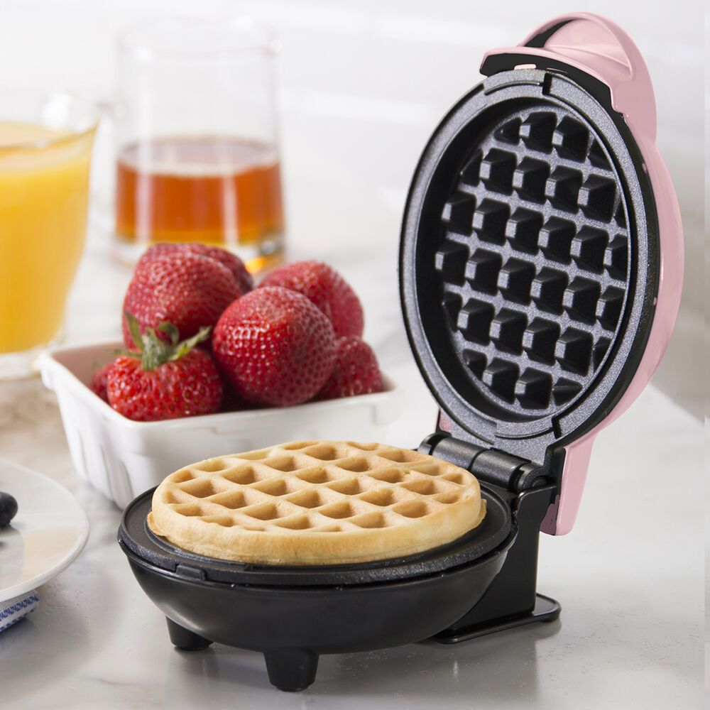
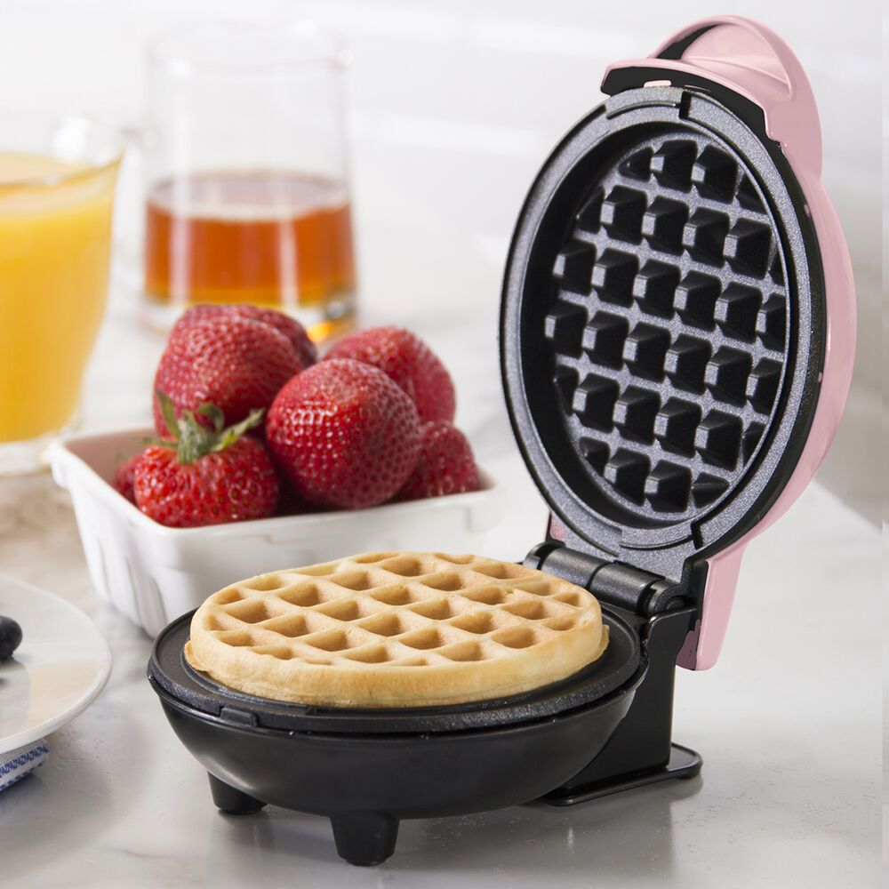

8/19/2022
Today I learned to make a very simple website with basic features.
 

9/2/2022
This week I learned about the different types of engineering. The one that sticked out to me was chemical engineering, because I it involves microscopic engineering which is fascinating. At the end of the week we started planning the Rube Goldberg Simple Machine. I also tried to realisticly model a wafflemaker in Tinkercad on Thursday.
9/16/2022
This week we mostly worked on our Rube Golberg design. Our team worked with cardboard, cutting out the shapes to make the objects which are used in the design itself. On Thursday we made a paper boat and put 8 quarters in it. Unfortunately, it did not do great on water.

9/23/2022
This was the week of actually bulding the Rube Goldberg design. We used our individual designs to make a design for the group whcih included elements from the every individual design. The process of building was tough and the time was scarce. On the final day we did not have a working Rube Goldberg design untl the last minute of the class. However, even now it took multiple tries to acutally pop the balloon. It took so many tries that the TA did not even record the successful trial, as he already got exhausted from recording all the previous failures.

9/30/2022
This we we did not much, because Mr. Poole was absent due to his Covid. We made a tinkercad for a limb prosthetic for an animal. I chose a fish and made a prosthetic for its tail.